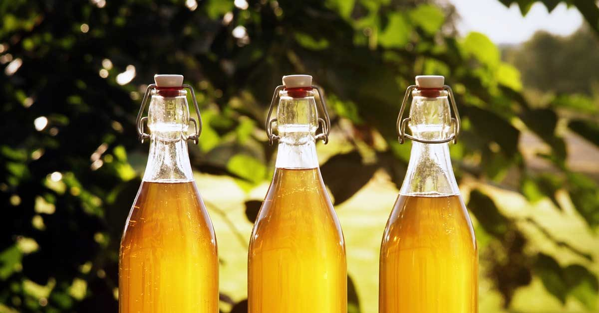

Mead

Description
A sweet honey wine.
Ingredients
- 30 to 35 liters of water
- 5kg to 10gk clover honey
- 1 sachet of bakers yeast
- Milton Mix
Directions
- Fill a boiler with water and bring to a boil
- Reduce heat and add honey
- Remove froth into a container
- Second boiler is boiled for 10 minutes
- Scoop out 3 cups of mix and add to second boiler
- When small batch is around 24 degree C add sachet of yeast
- Stir with whisk
- When honey mix is cooled, add it to the water in the barrel
- When barrel is at 24C add yeast mix
- Screw th elid on the barrel and add air trap